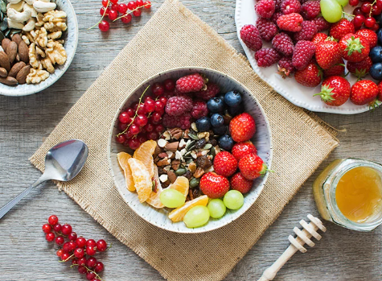
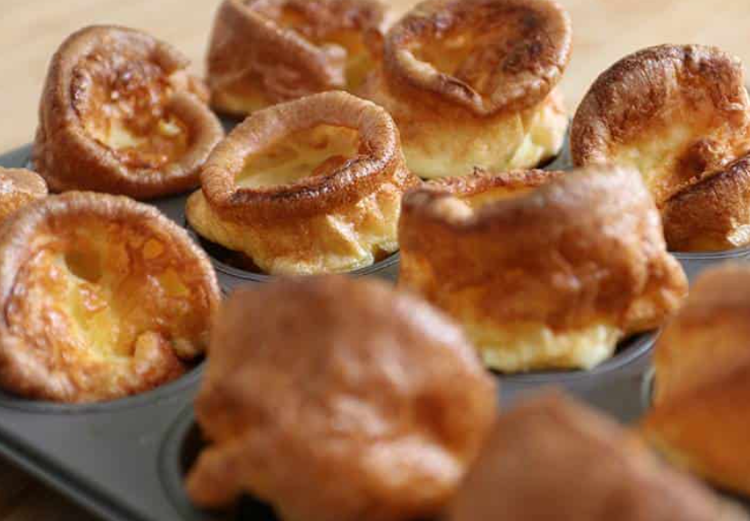

All you need to know about the gluten free diet that will make you well again!
Cutting out gluten from your diet may seem like a difficult and limiting task. Fortunately,
there are
many healthy and delicious foods that are naturally gluten-free.
The most cost-effective and healthy way to follow the gluten-free diet is to seek out these
naturally
gluten-free food groups, which include:
Fruits
Vegetables
Meat and poultry
Fish and seafood
Dairy
Beans, legumes, and nuts.
Pure wheat grass and barley grass are gluten-free, but there is gluten in the seeds. If they are not
harvested or processed correctly, there is risk of gluten contamination.

What About Grains?
There are many naturally gluten-free grains that you can enjoy in a variety of creative ways. Many of
these grains can be found in your local grocery store, but some of the lesser-known grains may only be
found in specialty or health food stores. It is not recommended to purchase grains from bulk bins
because of the possibility of cross-contact with gluten.
Naturally Gluten-Free Foods
The following grains, legumes, seeds, and other starchy foods are naturally gluten-free:
Beans
Chia
Corn
Flax
Millet
Nut flours
Potato
Quinoa
Rice
Soy
Tapioca
There is some research indicating that some naturally gluten-free grains may contain gluten from
cross-contact with gluten-containing grains through harvesting and processing. If you are concerned
about the safety of a grain, purchase only versions that are tested for the presence of gluten and
contain less than 20 parts per million.
Gluten-Free Substitutes
Many items that usually contain gluten have gluten-free alternatives that are widely available in most
grocery stores, making adherence to the gluten-free diet much easier. Keep in mind, however, that
minimally processed fresh foods are a crucial part of a healthy gluten-free diet. It is very
important
to base your diet around fruits, vegetables, meats, and other healthy food groups listed above.
Many commercially-available products are labeled “gluten-free,” but there will be some that are not;
this is why proper label reading is important. It is also important to remember that “wheat-free”
does
not necessarily mean “gluten-free.” Be wary, as many products may appear to be gluten-free, but are not.
As a rule, traditional wheat products such as pastas, breads, crackers, and other baked goods are
not
gluten-free. However, there are many gluten-free options available that use alternative flours and
grains. Often, gluten-free bread can be found in the freezer section. Additionally, there are
gluten-free flours and flour blends available, allowing you to bake your own bread.
If you have a recipe suggestion please feel free to click below button to enter your recipe!
Latest Recipes

Gluten Free Yorkshire Pudding Recipe
Gluten free Yorkshire pudding recipe - the ONLY recipe you'll ever need and easy to make in a
standard cupcake/muffin tray. They rise beautifully and only need 3 ingredients! You can even
make them dairy free too.
Gluten free brookie bars recipe, anyone? They're a combo of a choc chip cookie and a gooey brownie on
top. See the blog post above for advice on making these dairy free.